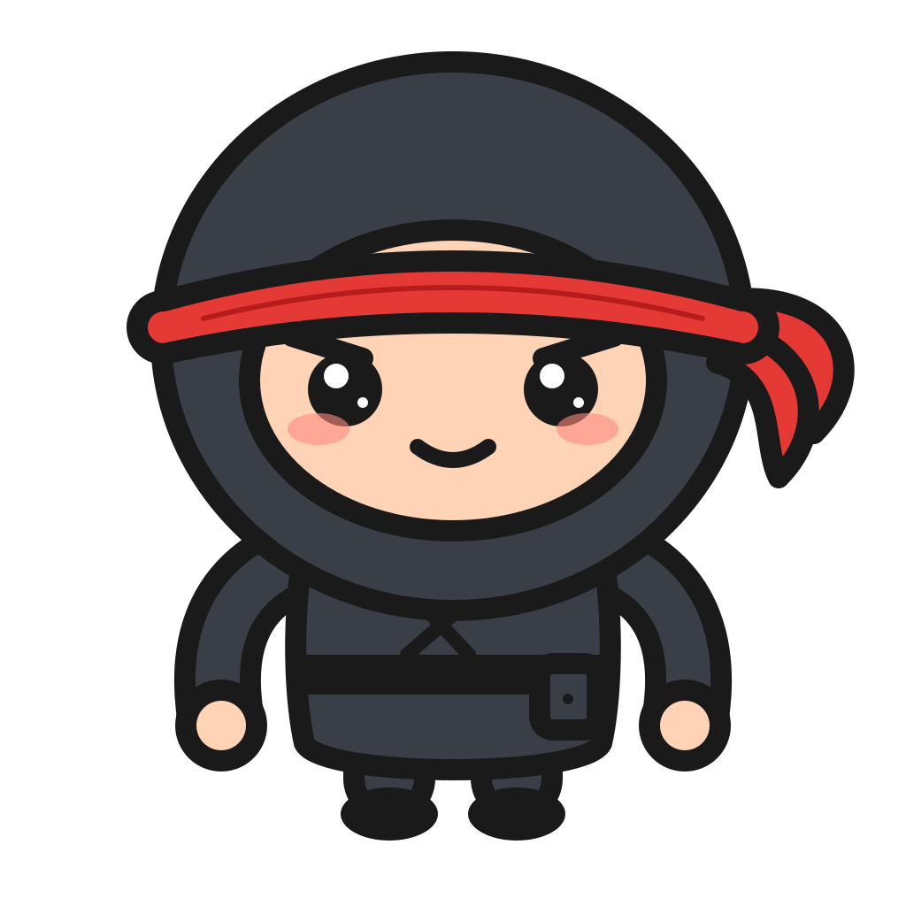

01
実装済み
HealthKit 自動連携
Apple Fitness や他アプリの運動を取り込み、重複を防ぎながらプロトコル達成度と Move に反映。
- 外部ワークアウトの取り込み
- UUIDによる重複防止
- 前面復帰・背景通知・手動同期
PRODUCT ROADMAP · 2026
Optimization App は、運動・水分・断食・学習・回復を一つの達成度にまとめる、 Apple Watch 中心のプライベートコーチです。

CURRENT STATE
基盤は完成済み。次の焦点は、機能追加よりも毎日使う画面の単純化と実機での信頼性です。
Apple Fitness や他アプリの運動を取り込み、重複を防ぎながらプロトコル達成度と Move に反映。
深い墨色、紅、金を軸に、トレーニング・学習・Today を統一。
ワークアウト、クイック記録、コンプリケーション、マスコット状態を手首へ。
回復、傾向、バイオマーカー、ストリーク、週次レビューを端末内の履歴から判断。
PRIORITY ROADMAP
NAVIGATION
Today、Train、Journey、More を中心に再編し、水分・断食・学習・Labs は目的に沿ってまとめる。
TODAY EXPERIENCE
マスコット、達成度、次の行動、3本の進捗、予定を最上部に固定し、条件付きカードは折りたたむ。
HOME SCREEN WIDGET
現在の表情、今日の達成数、次の行動を表示。既存WidgetKitコードを署名設定とともに復元する。
REAL-WORLD VALIDATION
iPhoneとWatchを日常使用し、同期漏れ、通知疲れ、入力の摩擦、バッテリー消費を記録して修正する。
PARTNER MODE
完成済みの共有ゾーン境界とチャレンジUIをCloudKitへ接続し、相手の進捗を安全に同期する。
HEALTH RELIABILITY
背景配信、長時間未起動、日付変更、他アプリ由来の運動を検証し、診断画面で同期状態を説明可能にする。
MASCOT LIFE
まばたき、あくび、小さな手振りだけを追加。身体を作り直さず、状態フィードバックを邪魔しない。
LONG-TERM STORY
過去の自分との比較、達成の節目、回復からの復帰をJourneyにまとめ、継続の意味を見せる。
FAMILY MODE
散歩、外遊び、家族チャレンジを個人のプロトコルへ無理なく加える。子どもの競争データは作らない。
DECISION RULES
追加機能は、行動を楽にするか、判断を正確にする場合だけ採用します。
競合するダッシュボードを増やさない。
個人データはAppleの仕組みと端末内を基本にする。
硬いストリークや通知攻勢で追い込まない。
新機能の前に、毎日の操作を短くする。